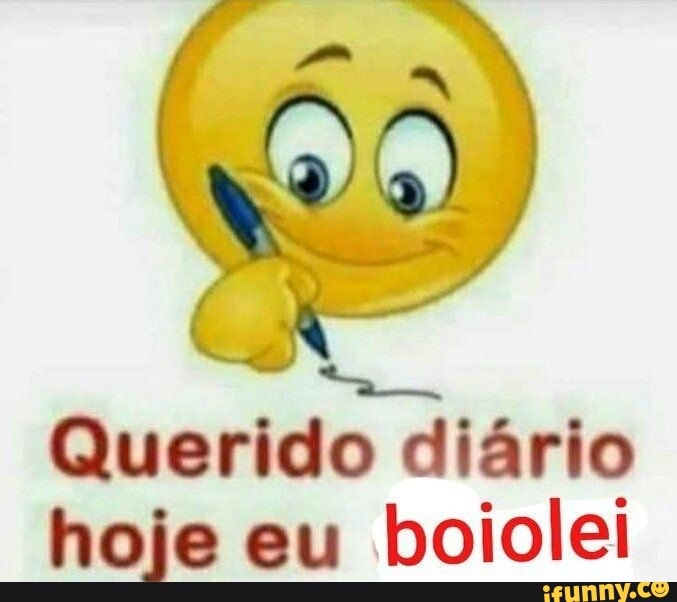
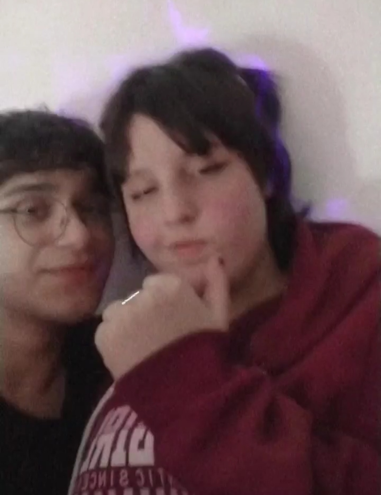
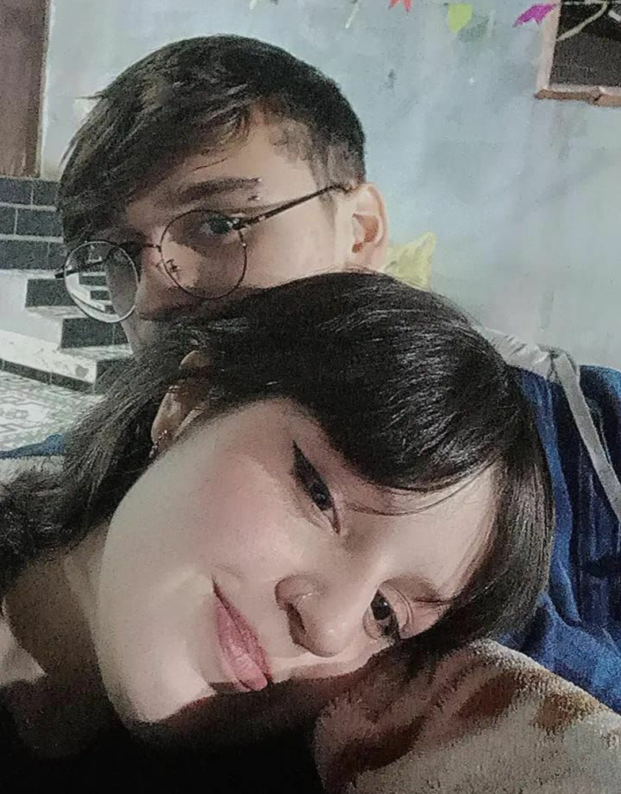
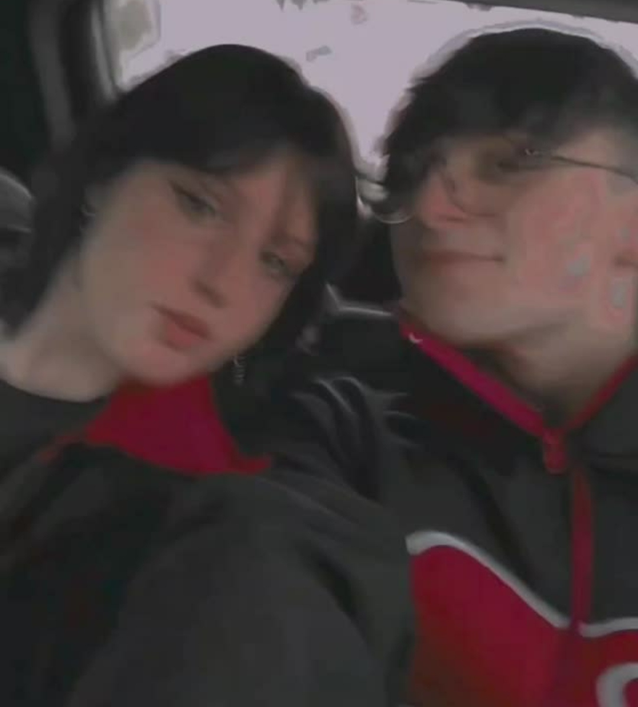

VOLTAMOS
Em maio de 2022, voltamos a nos falar, e tudo foi fluindo muito rápido, em pouco tempo estávamos andando de skate juntos e eu tinha voltado a te amar.
Então você postou um status no whatsapp falando de beijo, ai eu respondi, e pela primeira vez você correspondeu um flerte meu, e eu fiquei extremamente feliz, e criei muitas esperanças.
Com esperanças na cabeça e coragem no coração, te chamei para sair e perguntei se a gente se beijaria, e você disse que nâo sabia, pois estava com vergonha.
E entâo chegou o dia, não tive coragem de te beijar, por mais que ficamos abraçados e flertamos muito, não rolou, mas já estava rolando uma química surreal.
NOSSO NAMORO
Então entre flertes e mais flertes, chegou um dia que você enviou uma figurinha escrita "querido diario, hoje eu boiolei" num contexto que eu disse que eu não via mais graça nem em abraçar mais ninguém, pois só pensava em você, e disse que essa figurinha era você quando tava comigo.
Até então o clima era forte, e ficou mais ainda quando disse que se eu colocasse um piercing na sombrancelha, então coloquei, e fui na sua casa no dia 12/06/2022, sim, um ano depois daquele dia incrível
Nosso Primeiro beijo
Aí no dia dos namorados eu fui na sua casa, com piercing, assistimos gemaplys debaixo das cobertas, quando acabou gemaplys fomos assistir casimiro reagindo ao "Vai dar Namoro" do Rodrigo Faro e quando acabou o vídeo, voce ia falar "Vamos ver Stranger Thi-----"
Então eu lhe roubei um beijo, e você ficou muito mal, com vergonha, então fomos comer, e depois de comer, voltamos para o quarto e ficamos assistindo de novo, até que te abracei e disse "Quer tentar de novo? Você disse sim, então ficamos beijando até a hora de ir embora."
Aquele dia foi incrivel, voltei realizado pra casa, e depois você disse que não queria nada sério, e bom...
Um mês depois eu fui conhecer sua família, e amei todos eles, foi em uma festa junina, conheci a tia Bia, o seu tio, conversamos na fogueira, comi bastante kkkkkk. enfim, foi um dia incrível.
Depois nos deitamos no sofá e ficamos boiolando até meu pai chegar, eu guardo isso na minha mente com muito carinho, pois foi um dia muito especial para mim.
Um dos dias mais mágicos para mim foi quando fui no aniversário da sua mãe, ela fez um discurso para mim, falando que gostava de mim, e que graças eu era o genro dela, e tals, sério eu amo sua mãe, quando ela me mandou mensagem me chamando, eu pulei de felicidade na escola, e contei pra mutia gente porque estava muito feliz, aquele dia passei nuito tempo falando com seu tio sobre Pokémon Go, e descobri que ele era muito viciado nisso, e me ensinou vários hacks kkkkkkkk.
Também teve o dia que fomos num evento de cosplay no parque oriental e foi um dia muito legal também.
Minha Família
Você também conheceu minha família, e foi um dia muito legal, a gente comeu bolinho de polvilho, você conheceu a Nah, Carol, minhas tias, meus avós e os bebes, e espero do fundo do meuj coração que você tenha gostado, pois foi um dia que eu gostei muito.
E depois, nesse mesmo dia, fomos no aniversário do Eric, e foi algo importante para mim também, pois lá ele me tratou super bem, viu que eu estava com frio e me botou na fogueira e me deu a blusa dele, foi um dia que eu me senti especial.
Depois de tudo isso teve muito filler, como os dias que você ficou de castigo sem me ver e tals, nada muito importante, então vou pular para o evento canonico desse capitulo.
FIM (De novo)
Bom, um belo dia, fomos para nossas respectivas escolas, e eu como sempre acordava mais cedo mandei: Bom dia meu amor. E você carinhosa como sempre, respondeu (depois de ficar muito tempo online sem me responder) "o corinthians perdeu kkkkkkk".
então eu te ignorei, pod havia ficado chateado pra caramba, e sem se tocar você mandou "ficou sentido?" e logo depois mandou uma foto que você jurava que não tinha nada a ver, que era una foto com um mlk tendo uma intimidade que voce JAMAIS deveria ter com ninguém estando namorando, enfim, com todo esse contexto eu te tratei mal o dia inteiro para que você percebesse a merda que você fez (sim, sempre que eu ficar te tartando estranho, você fez alguma cagada e quero que você perceba e peça desculpas).
Depois, quando te contei o que rolou, começamos a discutir, aí te deixei falando sozinha e fui dormir.
Quando acordei de madrugada, eu vi o que você tinha mandado, e uma menina aleatória me marcou nas fotos da teta, e não falava com ela há meses, então você peiu um tmepo e terminamos.
E olha que eu tinha razão sobre sua foto, ja você...